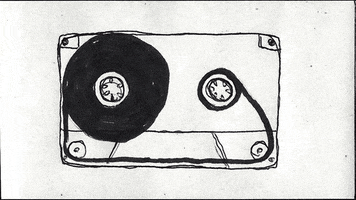
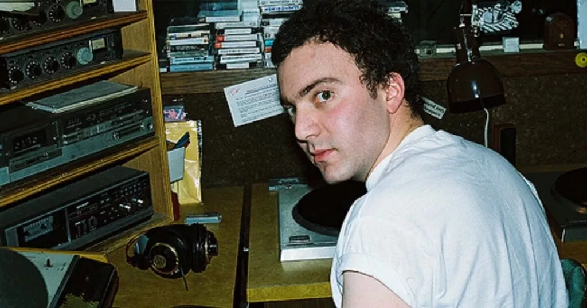

Lo-fi
O que é lo-fi? Conheça o estilo ideal para a concentração
Você pode até conhecer, mas sabe responder o que é lo-fi? O gênero tem como base a simplicidade das produções caseiras de baixa fidelidade e se tornou o queridinho do público nas plataformas de streaming, que cada vez mais tem buscado playlists com esse tipo de som.

O que é lo-fi?
termo lo-fi é derivado da expressão inglesa low fidelity, ou baixa fidelidade, utilizada para descrever a qualidade de uma produção sonora.
Originalmente, o termo não se referia a um gênero específico de música, sendo associado a qualquer gravação musical de baixo orçamento e com imperfeições , no melhor estilo faça você mesmo.
Embora as definições de lo-fi se modifiquem com o tempo, uma das principais características do gênero é a gravação instrumental, em registro caseiro ou improvisado , que valoriza efeitos sonoros como chiado de fita, sons de chuva, diálogos, entre outros.
A popularização do termo lo-fi

Com o avanço tecnológico, ele também foi evoluindo e se adaptando aos novos tempos. Hoje, o termo se refere a um tipo de música downbeat, capaz de criar uma atmosfera sonora aconchegante e até nostálgica , com sons que lembram os das vitrolas antigas e toca-fitas.
A partir do lo-fi, outros gêneros musicais surgiram como o chillwave, o pop hipnagógico e o lo-fi hip hop.
O que é lo-fi hip hop?
Derivado do lo-fi, o lo-fi hip hop é um tipo de música eletrônica de andamento mais calmo do que o do hip hop tradicional . Também conhecido como chillhop, as faixas do gênero não costumam ter vozes, sendo caracterizadas por suas batidas amenas.
Por se tratar de um estilo recente, muitos dos artistas de lo-fi hip hop são iniciantes, que encontraram nos programas de computador as ferramentas necessárias para fazer suas produções , dos loops de bateria aos loops melódicos e harmônicos.
Inspirados por artistas como Nujabes e J Dilla, os músicos que se dedicam ao estilo encontraram no YouTube uma forma prática de divulgar seu trabalho, alcançando rapidamente milhões de seguidores.
A explosão do lo-fi em 2020
Como a gente contou, o lo-fi deixou de ser um gênero de nicho em 2020 e se tornou um dos estilos mais populares dos serviços de streaming. E isso tem tudo a ver com a quarentena e as medidas de distanciamento social impostas para conter a pandemia de covid-19.
Com muita gente trabalhando e estudando remotamente, foi necessário encontrar ferramentas para se adaptar a essa nova realidade. A música foi uma delas, oferecendo conforto e esperança nos momentos mais angustiantes.
No entanto, havia também uma grande procura por sons que ajudassem a manter a concentração durante as tarefas . Algo que fosse tranquilo, relaxante e não oferecesse grandes distrações. E é exatamente isso que a música oferece.
Pensando nisso, canais do gênero passaram a disponibilizar sets com longas horas de duração, ideais para serem tocados como música de fundo, conquistando milhões de seguidores.